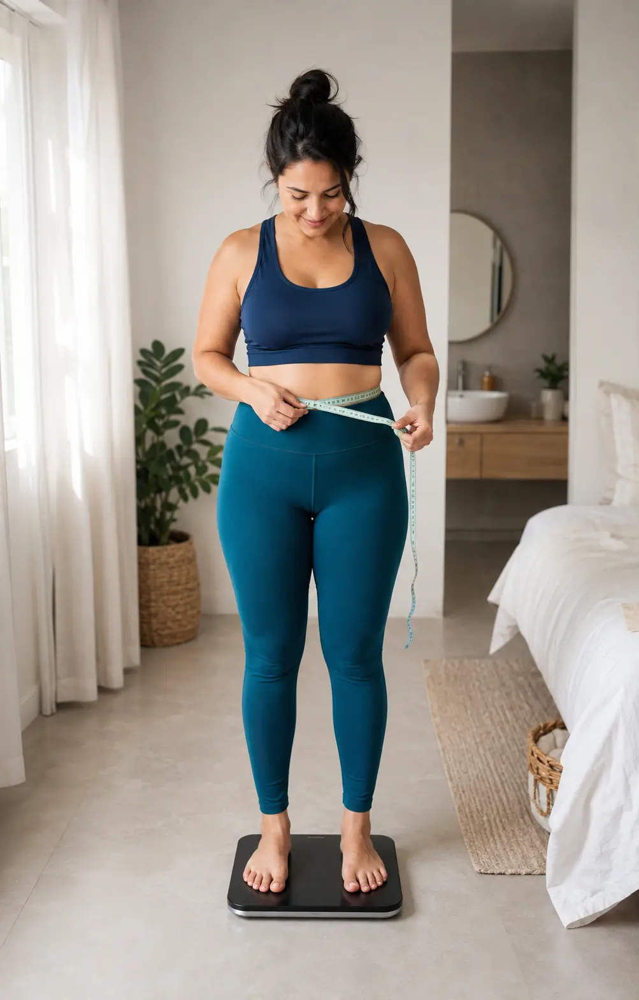
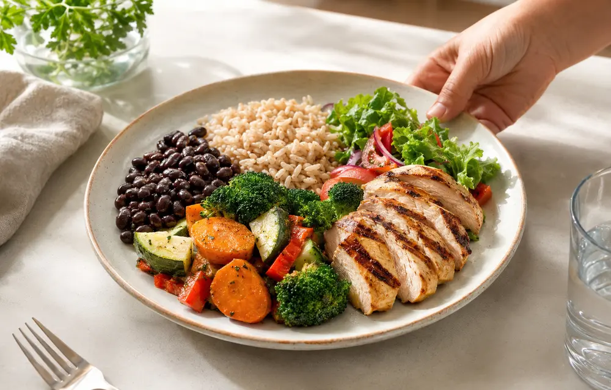
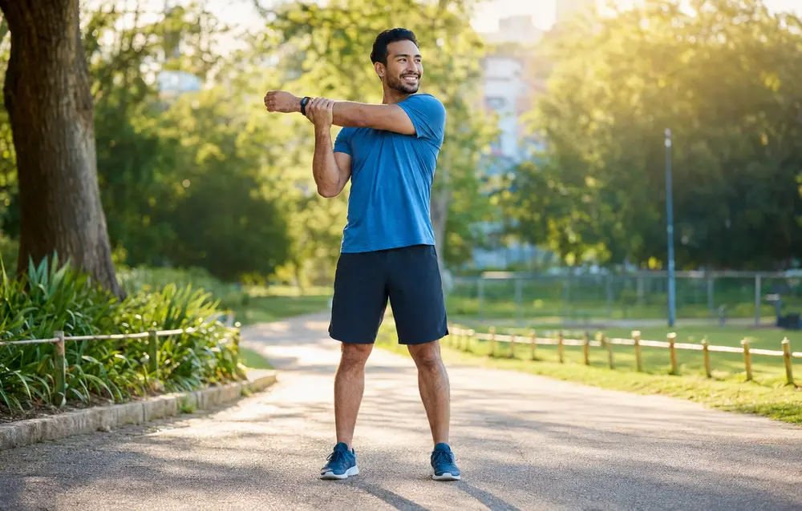

Dicas conforme o resultado
- Faça mudanças graduais e sustentáveis.
- Priorize alimentação variada, sono adequado e movimento regular.
- Procure orientação profissional quando necessário.
Descubra seu IMC, sua faixa estimada de peso saudável, o consumo diário de água e o gasto calórico aproximado.

Preencha os dados abaixo. O resultado é atualizado automaticamente.
O prazo aparece depois do cálculo e considera uma evolução gradual, sem dietas extremas.
Abaixo de 18,5: abaixo do peso.
18,5 a 24,9: faixa de referência saudável.
25 a 29,9: sobrepeso.
30 ou mais: obesidade, dividida em graus.
O resultado deve ser analisado junto com composição corporal, circunferência abdominal, histórico de saúde e rotina.
Um resultado elevado não define sua saúde sozinho. Como ponto de partida, tente:
O Índice de Massa Corporal é uma medida de triagem que relaciona peso e altura. Ele ajuda a identificar faixas de referência em adultos, mas não mede diretamente a gordura corporal e não substitui uma avaliação clínica. O resultado ganha mais valor quando é analisado junto com circunferência abdominal, composição corporal, pressão arterial, exames, nível de atividade física, qualidade do sono e histórico de saúde.
Em vez de usar o número como julgamento, utilize-o como ponto de partida para observar hábitos e planejar mudanças graduais. Disciplina não significa perfeição: significa criar decisões simples que possam ser repetidas na maior parte dos dias.
A tabela abaixo é uma referência amplamente utilizada para adultos. O risco de saúde não depende apenas do IMC, mas tende a aumentar quando o excesso de peso vem acompanhado de pressão alta, alterações de glicose, colesterol, sedentarismo, apneia do sono ou maior circunferência abdominal.
| IMC | Classificação | Interpretação inicial |
|---|---|---|
| Abaixo de 18,5 | Abaixo do peso | Pode indicar baixa reserva corporal e merece avaliação quando há perda involuntária. |
| 18,5 a 24,9 | Faixa adequada | Referência geralmente associada a menor risco, sem dispensar outros indicadores. |
| 25,0 a 29,9 | Sobrepeso | Convém revisar hábitos e fatores metabólicos de forma gradual. |
| 30,0 a 34,9 | Obesidade grau I | Avaliação profissional ajuda a definir metas seguras e realistas. |
| 35,0 a 39,9 | Obesidade grau II | O acompanhamento individualizado torna-se ainda mais importante. |
| 40 ou mais | Obesidade grau III | Recomenda-se cuidado multiprofissional, respeitando mobilidade e condições associadas. |

Começar com 10 a 20 minutos de caminhada pode ser mais sustentável do que tentar cumprir treinos intensos de uma só vez. Aumente tempo ou ritmo aos poucos e respeite dores, falta de ar ou limitações.
A estimativa calculada na página é apenas uma referência. Clima, atividade física, alimentação, gravidez, doenças renais ou cardíacas e medicamentos podem alterar a necessidade de líquidos.
Organize refeições com vegetais, proteínas, feijões, frutas e fontes de carboidrato adequadas. Restrições extremas costumam ser difíceis de manter e podem aumentar episódios de fome e desistência.

Decida com antecedência quando caminhar, o que comprar e quais refeições simples preparar. Disciplina fica mais fácil quando o ambiente e a agenda favorecem a escolha desejada.
O objetivo não é prometer uma quantidade de quilos, e sim criar uma base de hábitos. O ritmo de mudança corporal varia entre pessoas. Use o plano abaixo para testar uma rotina mais organizada e leve os resultados a um profissional quando precisar de orientação individual.
O peso é apenas um indicador. Mudanças sustentáveis também podem melhorar disposição, qualidade do sono, mobilidade, controle da pressão, capacidade de caminhar, relação com a comida e confiança para manter uma rotina.

Alimentação balanceadaRefeições simples e completas ajudam a manter saciedade e constância.
Mais energiaMovimento gradual melhora condicionamento e disposição para as tarefas diárias.Baixe o novo guia ilustrado com 30 receitas simples para café da manhã, almoço, jantar e lanches, além de planejamento de 30 dias e lista de compras. O material apoia uma rotina alimentar mais organizada, sem prometer emagrecimento rápido.
 Guia prático • 30 dias30 Receitas LevesPara uma rotina mais saudável
Guia prático • 30 dias30 Receitas LevesPara uma rotina mais saudávelO IMC foi desenvolvido como uma medida populacional e se tornou uma ferramenta simples de triagem. Duas pessoas com o mesmo IMC podem ter proporções diferentes de músculo, gordura, ossos e distribuição abdominal. Por isso, atletas ou pessoas muito musculosas podem aparecer acima da faixa sem apresentar excesso de gordura, enquanto alguém com IMC adequado ainda pode ter sedentarismo ou alterações metabólicas.
Para uma visão mais completa, profissionais podem considerar circunferência abdominal, relação cintura-altura, composição corporal, exames laboratoriais, histórico familiar, sono, alimentação e atividade física. Para crianças e adolescentes, a interpretação utiliza curvas específicas por idade e sexo.
Interpretar o número com equilíbrio evita decisões precipitadas. O IMC é útil como triagem, mas precisa ser combinado com outros indicadores.
O IMC ajuda a identificar faixas de peso associadas a diferentes níveis de risco em adultos.
Um IMC dentro da faixa adequada não garante, sozinho, que todos os indicadores de saúde estejam normais.
Pessoas muito musculosas podem apresentar IMC elevado sem excesso proporcional de gordura corporal.
Dietas radicais não são obrigatórias para melhorar o resultado; hábitos consistentes costumam ser mais sustentáveis.
É o Índice de Massa Corporal, calculado dividindo o peso em quilogramas pela altura em metros ao quadrado.
Em adultos, a faixa de referência mais usada é de 18,5 a 24,9.
Nem sempre. Pessoas com muita massa muscular podem ter IMC alto sem excesso de gordura corporal.
Não. Crianças e adolescentes precisam de curvas específicas por idade e sexo.
A ferramenta usa uma referência aproximada de 35 ml por quilo. Necessidades reais variam com clima, atividade física, saúde e orientação profissional.
Não. É uma aproximação baseada em fórmula. Atividade física, composição corporal e metabolismo individual alteram o gasto real.
Não existe um número único para todas as pessoas. O ritmo depende do peso inicial, saúde, alimentação, atividade física e acompanhamento. Evite metas extremas e procure orientação individual.
Não. O peso varia com hidratação, sal, intestino e ciclo menstrual. Algumas pessoas preferem acompanhar semanalmente; outras se beneficiam de focar em hábitos e medidas funcionais.
É uma faixa matemática baseada no IMC de referência. Ela não substitui a avaliação de composição corporal, histórico de saúde ou orientação profissional.
O PDF apresenta receitas e organização geral, não uma dieta individual. Pessoas com alergias, doenças, gravidez, uso de medicamentos ou necessidades específicas devem consultar um profissional.